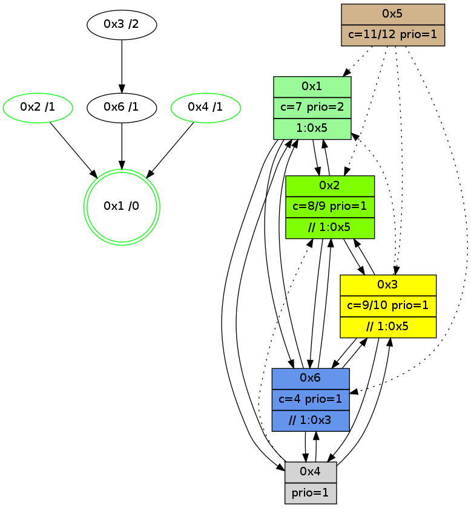

>> << IDX [start] -100 -25 -5 +0 +5 +25 +100 [930.234093189]
 Previous packets
----------------------------------------------------------------------
925.313007 beacon01(adaf) #0 coord=01,02,05,03,04,06 cycle=432.0ms assoc
-- color-indic=1 64 2d f3
925.322968 beacon02(adaf) #0 coord=01,02,05,03,04,06 cycle=432.0ms assoc 64 7c 0c
925.332969 beacon05(adaf) #0 coord=01,02,05,03,04,06 cycle=432.0ms assoc 64 da 26
925.342970 beacon03(adaf) #0 coord=01,02,05,03,04,06 cycle=432.0ms assoc 64 46 02
925.352969 beacon04(adaf) #0 coord=01,02,05,03,04,06 cycle=432.0ms assoc 64 e0 28
925.362969 beacon06(adaf) #0 coord=01,02,05,03,04,06 cycle=432.0ms assoc 64 94 34
925.374527 [STC(3)->6-.->1 #0.116 new-neigh,tree-change,inconsistent-stability,to-color d=2]
925.378399 [Hello(4): seq=731 sym=1,6,3 asym=2 sysInfo=hasWarning stat=1:2,1,2,0/6:6,0,3,0/3:4,2,9,4/2:0,1,1,0]
925.381761 [Hello(1): seq=630 sym=2,4,6 sysInfo=hasWarning,coloring-mode-on,ColoringModeRequestCalled stat=2:7,1,8,2/4:0,0,1,0/6:6,0,5,1]
----------------------------------------------------------------------
925.805116 beacon01(adaf) #0 coord=01,02,05,03,04,06 cycle=432.0ms assoc
-- color-indic=1 64 e9 9c
925.815077 beacon02(adaf) #0 coord=01,02,05,03,04,06 cycle=432.0ms assoc 64 b8 63
925.825076 beacon05(adaf) #0 coord=01,02,05,03,04,06 cycle=432.0ms assoc 64 1e 49
925.835077 beacon03(adaf) #0 coord=01,02,05,03,04,06 cycle=432.0ms assoc 64 82 6d
925.855080 beacon06(adaf) #0 coord=01,02,05,03,04,06 cycle=432.0ms assoc 64 50 5b
925.866766 [Hello(6): seq=644 sym=4,2,1,3 sysInfo=hasWarning stat=4:0,0,1,0/2:5,3,6,1/1:9,7,15,1/3:2,4,9,1]
925.870466 [Hello(3): seq=729 sym=6,4,2 asym=1 sysInfo=hasWarning stat=6:7,11,14,2/4:6,3,4,0/2:0,0,2,0/1:8,6,10,1]
925.872908 [Color(2) seq=129 @0:0 color=8/9 prio=1 >>1.@5 c=4,7,9;0,1,2,5,6,a]
925.878724 [Color(1) seq=157 @0:0 color=7 prio=2 >1.@5 c=1,4,6,8,9;0,2,3,5,a]
----------------------------------------------------------------------
926.297223 beacon01(adaf) #0 coord=01,02,05,03,04,06 cycle=432.0ms assoc
-- color-indic=1 64 a5 2c
926.307186 beacon02(adaf) #0 coord=01,02,05,03,04,06 cycle=432.0ms assoc 64 f4 d3
926.317184 beacon05(adaf) #0 coord=01,02,05,03,04,06 cycle=432.0ms assoc 64 52 f9
926.327185 beacon03(adaf) #0 coord=01,02,05,03,04,06 cycle=432.0ms assoc 64 ce dd
926.337185 beacon04(adaf) #0 coord=01,02,05,03,04,06 cycle=432.0ms assoc 64 68 f7
926.347186 beacon06(adaf) #0 coord=01,02,05,03,04,06 cycle=432.0ms assoc 64 1c eb
926.358056 [Hello(1): seq=631 sym=2,4,6 sysInfo=hasWarning,coloring-mode-on,ColoringModeRequestCalled stat=2:7,1,8,2/4:0,0,1,0/6:6,0,5,1]
926.360596 [Color(4) seq=86 @0:0 prio=1 c=7;1,4,6,8,9]
926.362571 [Hello(2): seq=1220 sym=3,6,1 mpr= sysInfo=hasWarning stat=3:0,0,0,0/6:0,0,1,0/1:8,7,11,0]
----------------------------------------------------------------------
926.789330 beacon01(adaf) #0 coord=01,02,05,03,04,06 cycle=432.0ms assoc
-- color-indic=1 64 61 43
926.799294 beacon02(adaf) #0 coord=01,02,05,03,04,06 cycle=432.0ms assoc 64 30 bc
926.809292 beacon05(adaf) #0 coord=01,02,05,03,04,06 cycle=432.0ms assoc 64 96 96
926.819291 beacon03(adaf) #0 coord=01,02,05,03,04,06 cycle=432.0ms assoc 64 0a b2
926.829293 beacon04(adaf) #0 coord=01,02,05,03,04,06 cycle=432.0ms assoc 64 ac 98
926.839292 beacon06(adaf) #0 coord=01,02,05,03,04,06 cycle=432.0ms assoc 64 d8 84
926.850965 [Hello(6): seq=645 sym=4,2,1,3 sysInfo=hasWarning stat=4:0,1,1,0/2:6,4,6,1/1:10,8,15,1/3:3,4,9,1]
926.854283 [STC(1) #0.117 new-neigh,tree-change,inconsistent-stability,stable,to-color d=0]
926.856404 [Hello(3): seq=730 sym=6,4,2 asym=1 sysInfo=hasWarning stat=6:7,11,14,2/4:6,4,4,0/2:1,1,2,0/1:9,7,10,1]
926.860111 [Hello(4): seq=732 sym=1,6,3 asym=2 sysInfo=hasWarning stat=1:4,2,2,0/6:7,0,3,0/3:5,2,9,4/2:1,2,1,0]
926.866672 [Color(2) seq=130 @0:0 color=8/9 prio=1 >>1.@5 c=4,7,9;0,1,2,5,6,a]
926.869626 [Color(1) seq=158 @0:0 color=7 prio=2 >1.@5 c=1,4,6,8,9;0,2,3,5,a]
----------------------------------------------------------------------
927.281439 beacon01(adaf) #0 coord=01,02,05,03,04,06 cycle=432.0ms assoc
-- color-indic=1 64 3f 22
927.291400 beacon02(adaf) #0 coord=01,02,05,03,04,06 cycle=432.0ms assoc 64 6e dd
927.301400 beacon05(adaf) #0 coord=01,02,05,03,04,06 cycle=432.0ms assoc 64 c8 f7
927.311400 beacon03(adaf) #0 coord=01,02,05,03,04,06 cycle=432.0ms assoc 64 54 d3
927.321402 beacon04(adaf) #0 coord=01,02,05,03,04,06 cycle=432.0ms assoc 64 f2 f9
927.331400 beacon06(adaf) #0 coord=01,02,05,03,04,06 cycle=432.0ms assoc 64 86 e5
927.342946 [STC(6)->1 #0.117 new-neigh,tree-change,inconsistent-stability,to-color d=1]
927.344313 [Hello(1): seq=632 sym=2,4,6 sysInfo=hasWarning,coloring-mode-on,ColoringModeRequestCalled stat=2:8,1,8,2/4:0,1,1,0/6:7,0,5,1]
927.346782 [Hello(2): seq=1221 sym=3,6,1 sysInfo=hasWarning stat=3:0,0,0,0/6:0,0,1,0/1:8,8,11,0]
927.349179 [Color(4) seq=87 @0:0 prio=1 c=7;1,4,6,8,9]
----------------------------------------------------------------------
927.773547 beacon01(adaf) #0 coord=01,02,05,03,04,06 cycle=432.0ms assoc
-- color-indic=1 64 fb 4d
927.783508 beacon02(adaf) #0 coord=01,02,05,03,04,06 cycle=432.0ms assoc 64 aa b2
927.793509 beacon05(adaf) #0 coord=01,02,05,03,04,06 cycle=432.0ms assoc 64 0c 98
927.803509 beacon03(adaf) #0 coord=01,02,05,03,04,06 cycle=432.0ms assoc 64 90 bc
927.813510 beacon04(adaf) #0 coord=01,02,05,03,04,06 cycle=432.0ms assoc 64 36 96
927.823510 beacon06(adaf) #0 coord=01,02,05,03,04,06 cycle=432.0ms assoc 64 42 8a
927.835220 [Hello(6): seq=646 sym=4,2,1,3 sysInfo=hasWarning stat=4:1,2,1,0/2:7,5,6,1/1:11,9,0,1/3:4,4,9,1]
927.838361 [Color(1) seq=159 @0:0 color=7 prio=2 >1.@5 c=1,4,6,8,9;0,2,3,5,a]
927.840683 [Hello(4): seq=733 sym=1,6,3 asym=2 sysInfo=hasWarning stat=1:4,3,2,0/6:7,0,3,0/3:5,2,9,4/2:1,3,1,0]
927.844489 [Hello(3): seq=731 sym=6,4,2 asym=1 sysInfo=hasWarning stat=6:7,11,15,2/4:7,5,4,0/2:2,2,2,0/1:10,8,10,1]
927.847375 [STC(3)->6-.->1 #0.117 new-neigh,tree-change,inconsistent-stability,to-color d=2]
927.850897 [Color(2) seq=131 @0:0 color=8/9 prio=1 >>1.@5 c=4,7,9;0,1,2,5,6,a]
----------------------------------------------------------------------
928.265658 beacon01(adaf) #0 coord=01,02,05,03,04,06 cycle=432.0ms assoc
-- color-indic=1 64 b7 fd
928.275620 beacon02(adaf) #0 coord=01,02,05,03,04,06 cycle=432.0ms assoc 64 e6 02
928.285619 beacon05(adaf) #0 coord=01,02,05,03,04,06 cycle=432.0ms assoc 64 40 28
928.295620 beacon03(adaf) #0 coord=01,02,05,03,04,06 cycle=432.0ms assoc 64 dc 0c
928.305620 beacon04(adaf) #0 coord=01,02,05,03,04,06 cycle=432.0ms assoc 64 7a 26
928.315620 beacon06(adaf) #0 coord=01,02,05,03,04,06 cycle=432.0ms assoc 64 0e 3a
928.327104 [Hello(1): seq=633 sym=2,4,6 sysInfo=hasWarning,coloring-mode-on,ColoringModeRequestCalled stat=2:9,2,8,2/4:1,2,1,0/6:7,0,5,1]
928.331015 [Hello(2): seq=1222 sym=3,6,1 sysInfo=hasWarning stat=3:0,0,0,0/6:0,0,1,0/1:8,8,11,0]
928.333401 [Color(4) seq=88 @0:0 prio=1 c=7;1,4,6,8,9]
----------------------------------------------------------------------
928.757768 beacon01(adaf) #0 coord=01,02,05,03,04,06 cycle=432.0ms assoc
-- color-indic=1 64 73 92
928.767727 beacon02(adaf) #0 coord=01,02,05,03,04,06 cycle=432.0ms assoc 64 22 6d
928.777729 beacon05(adaf) #0 coord=01,02,05,03,04,06 cycle=432.0ms assoc 64 84 47
928.787730 beacon03(adaf) #0 coord=01,02,05,03,04,06 cycle=432.0ms assoc 64 18 63
928.797729 beacon04(adaf) #0 coord=01,02,05,03,04,06 cycle=432.0ms assoc 64 be 49
928.807729 beacon06(adaf) #0 coord=01,02,05,03,04,06 cycle=432.0ms assoc 64 ca 55
928.819457 [Hello(3): seq=732 sym=6,4,2 asym=1 sysInfo=hasWarning stat=6:7,11,15,2/4:7,6,4,0/2:3,3,2,0/1:11,8,10,1]
928.823171 [Hello(4): seq=734 sym=1,6,3 asym=2 sysInfo=hasWarning stat=1:4,3,2,0/6:7,0,3,0/3:6,2,10,4/2:1,4,1,0]
928.825298 [Color(1) seq=160 @0:0 color=7 prio=2 >1.@5 c=1,4,6,8,9;0,2,3,5,a]
928.829218 [Color(2) seq=132 @0:0 color=8/9 prio=1 >>1.@5 c=4,7,9;0,1,2,5,6,a]
----------------------------------------------------------------------
929.249876 beacon01(adaf) #0 coord=01,02,05,03,04,06 cycle=432.0ms assoc
-- color-indic=1 64 3e 95
929.259838 beacon02(adaf) #0 coord=01,02,05,03,04,06 cycle=432.0ms assoc 64 6f 6a
929.269838 beacon05(adaf) #0 coord=01,02,05,03,04,06 cycle=432.0ms assoc 64 c9 40
929.279838 beacon03(adaf) #0 coord=01,02,05,03,04,06 cycle=432.0ms assoc 64 55 64
929.289838 beacon04(adaf) #0 coord=01,02,05,03,04,06 cycle=432.0ms assoc 64 f3 4e
929.299838 beacon06(adaf) #0 coord=01,02,05,03,04,06 cycle=432.0ms assoc 64 87 52
929.310995 [Hello(1): seq=634 sym=2,4,6 sysInfo=hasWarning,coloring-mode-on,ColoringModeRequestCalled stat=2:10,3,8,2/4:1,3,1,0/6:7,0,5,1]
929.313526 [Color(4) seq=89 @0:0 prio=1 c=7;1,4,6,8,9]
929.314975 [STC(1) #0.118 new-neigh,tree-change,inconsistent-stability,stable,to-color d=0]
929.316976 [Hello(2): seq=1223 sym=3,6,1 sysInfo=hasWarning stat=3:0,0,0,0/6:0,0,1,0/1:8,8,11,0]
----------------------------------------------------------------------
929.741984 beacon01(adaf) #0 coord=01,02,05,03,04,06 cycle=432.0ms assoc
-- color-indic=1 64 fa fa
929.751944 beacon02(adaf) #0 coord=01,02,05,03,04,06 cycle=432.0ms assoc 64 ab 05
929.761945 beacon05(adaf) #0 coord=01,02,05,03,04,06 cycle=432.0ms assoc 64 0d 2f
929.771944 beacon03(adaf) #0 coord=01,02,05,03,04,06 cycle=432.0ms assoc 64 91 0b
929.781947 beacon04(adaf) #0 coord=01,02,05,03,04,06 cycle=432.0ms assoc 64 37 21
929.791945 beacon06(adaf) #0 coord=01,02,05,03,04,06 cycle=432.0ms assoc 64 43 3d
929.803680 [Hello(3): seq=733 sym=6,4,2 asym=1 sysInfo=hasWarning stat=6:7,11,15,2/4:8,7,4,0/2:4,4,2,0/1:12,9,11,1]
929.807145 [Color(1) seq=161 @0:0 color=7 prio=2 >1.@5 c=1,4,6,8,9;0,2,3,5,a]
929.809269 [Hello(6): seq=648 sym=4,2,1,3 sysInfo=hasWarning stat=4:3,4,1,0/2:9,7,6,1/1:13,11,1,1/3:5,4,10,1]
929.812408 [STC(6)->1 #0.118 new-neigh,tree-change,inconsistent-stability,to-color d=1]
929.818913 [Hello(4): seq=735 sym=1,6,3 asym=2 sysInfo=hasWarning stat=1:5,4,3,0/6:7,0,3,0/3:6,2,10,4/2:2,5,1,0]
929.821796 [STC(4)->1 #0.118 new-neigh,tree-change,inconsistent-stability,stable,to-color d=1]
929.825316 [Color(2) seq=133 @0:0 color=8/9 prio=1 >>1.@5 c=4,7,9;0,1,2,5,6,a]